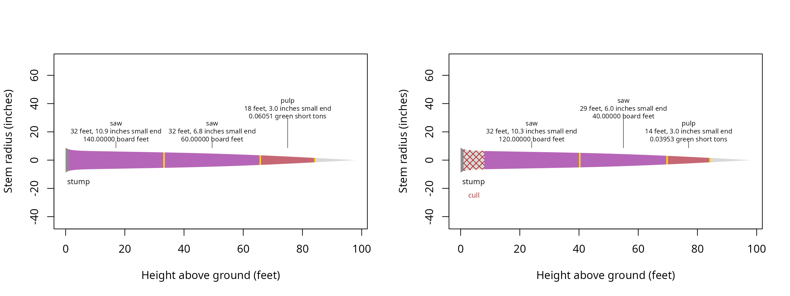

Located defects change which stem sections merchandise()
can use and which products can occupy them. Record these when a defect
has a known position along the stem, using heights in feet above ground.
A defect row belongs to a tree identifier and describes an interval or
an ending height, rather than a deduction from the final scale.
What does each effect do?
A cull removes its interval from cutting. An end stops the usable
stem at its starting height. A restriction allows only its named product
within the interval, and a sweep compares its percentage with each
product’s max_sweep. None of these effects applies a
percentage deduction to log scale.
## Attach the calculation and data tools
library(merchandiser)
library(dplyr)
## Remove a known section from this example tree
cull <- defect(tree_id = example_trees$tree_id[1],
start_height = 1,
end_height = 8,
effect = 'cull')
## End the usable stem at a measured height
end <- defect(tree_id = example_trees$tree_id[1],
start_height = 40,
end_height = NA,
effect = 'end')
## Allow only pulp above the restriction's starting height
restricted <- defect(tree_id = example_trees$tree_id[1],
start_height = 30,
end_height = NA,
effect = 'restrict',
product = 'pulp')
## Compare sweep severity with product acceptance limits
sweep <- defect(tree_id = example_trees$tree_id[1],
start_height = 20,
end_height = 35,
effect = 'sweep',
percent = 25)| tree_id | start (feet) | end (feet) | effect | product | severity (percent) |
|---|---|---|---|---|---|
| 1 | 1 | 8 | cull | NA | NA |
| 1 | 40 | NA | end | NA | NA |
| 1 | 30 | NA | restrict | pulp | NA |
| 1 | 20 | 35 | sweep | NA | 25 |
The cull ends at 8 feet, and its recorded interval is unavailable to every product.
Missing interval ends extend to the tree tip for cull, restriction, and sweep records. An end record uses its starting height alone. Restrictions require an exact product name, and percentages belong only to sweep records. The constructor checks field types, while validation checks their relationships to the trees and products.
What changed with the defects?
The shipped Pacific Northwest defects include each effect. The comparison below selects a tree with a butt cull and passes its matching record explicitly. Both calculations use the same measurements and specifications, so differences follow from the available stem sections.
## Assign sawlog dimensions and a sweep limit
saw <- product(product = 'saw', ## product label
min_length = 16, ## feet
max_length = 32, ## feet
trim = 0.5, ## feet
min_sed = 6, ## inches inside bark
max_sweep = 10, ## percent
volume_unit = 'scribner') ## board feet
## Accept shorter and smaller sections as pulp
pulp <- product(product = 'pulp', ## product label
min_length = 8, ## feet
max_length = 20, ## feet
trim = 0.5, ## feet
min_sed = 3, ## inches inside bark
volume_unit = 'green_ton') ## green short tonsThe saw product precedes pulp in products(), giving it
cutting priority in both calculations.
## Select the tree and its located defects
tree <- example_trees_pnw %>%
filter(tree_id == 7)
## Keep records for that tree
located <- example_defects_pnw %>%
filter(tree_id == 7)
## Set sawlog priority ahead of pulp
specifications <- products(saw, pulp)
## Select logs without located defects
clean <- merchandise(tree_id = tree$tree_id,
dbh = tree$dbh,
ht = tree$ht,
spcd = tree$spcd,
products = specifications)
## Select logs with the recorded cull
affected <- merchandise(tree_id = tree$tree_id,
dbh = tree$dbh,
ht = tree$ht,
spcd = tree$spcd,
products = specifications,
defects = located)| condition | product | start (feet) | end (feet) | length (feet) | small-end diameter (inches) | scale (Scribner board feet) | scale (green short tons) |
|---|---|---|---|---|---|---|---|
| clean | saw | 1.0 | 33.5 | 32 | 10.895 | 140 | NA |
| clean | saw | 33.5 | 66.0 | 32 | 6.753 | 60 | NA |
| clean | pulp | 66.0 | 84.5 | 18 | 3.017 | NA | 0.061 |
| affected | saw | 8.0 | 40.5 | 32 | 10.258 | 120 | NA |
| affected | saw | 40.5 | 70.0 | 29 | 6.019 | 40 | NA |
| affected | pulp | 70.0 | 84.5 | 14 | 3.017 | NA | 0.040 |
The affected calculation starts its first log at 8 feet, which moves the base of the selected wood in the drawing.

The affected stem begins cutting at 8 feet, above the recorded butt cull. The same product colors identify corresponding products in both drawings.
| tree_id | start (feet) | end (feet) | cause |
|---|---|---|---|
| 7 | 1 | 8 | cull |
The cull residual ends at 8 feet, matching the upper boundary in the defect record.
When merchandising a subset of trees, filter defect records to the same identifiers. The calculation warns and drops records for trees absent from that call before checking the remaining records. Retaining matching identifiers avoids carrying unrelated defect warnings into a comparison of product specifications.
How do stopper columns become defects?
defects_from_stoppers() converts a saw stop to a
restriction, a pulp stop to an end, and a jump butt to a cull above the
stump. Stops must occur in their physical order and remain within the
tree. Missing stop heights add no record. A whole pulp tree can be
identified with pulp_tree, without also supplying a saw
stop or jump butt.
## Convert the southern list's recorded stopping heights
stoppers <- defects_from_stoppers(tree_id = example_trees_south$tree_id,
ht = example_trees_south$ht,
topwood_product = 'pulp',
saw_stop = example_trees_south$saw_stop,
pulp_stop = example_trees_south$pulp_stop,
jump_butt = example_trees_south$jump_butt)| effect | records (count) |
|---|---|
| cull | 1 |
| end | 32 |
| restrict | 60 |
The conversion creates 60 restriction records from the southern saw stops.
How is a percentage by thirds combined?
defect_by_thirds() weights the recorded percentages by
inside bark volume in the lower, middle, and upper thirds of total
height. It returns a whole-tree percentage for use in a separate
calculation. A subsequent calculation can apply the returned percentage
to a specified quantity. merchandise() does not apply this
percentage.
## Weight the recorded percentages by stem volume in each third
thirds <- defect_by_thirds(dbh = tree$dbh,
ht = tree$ht,
spcd = tree$spcd,
lower = 10,
middle = 5,
upper = 0)| whole-tree defect (percent) | status |
|---|---|
| 7.693 | 0 |
The volume-weighted estimate is 7.693 percent for this tree’s thirds.
The percentage result has its own status column. A missing percentage in any third prevents a complete weighted estimate, rather than treating the missing entry as an absence of defect. Retain that status with any later deduction.
Are the records consistent?
## Validate heights and product names before cutting
checked <- validate_defects(defects = located,
tree_id = tree$tree_id,
ht = tree$ht,
products = specifications)| tree_id | start (feet) | end (feet) | effect | product | sweep (percent) | status |
|---|---|---|---|---|---|---|
| 7 | 1 | 8 | cull | NA | NA | 0 |
The record has status 0, indicating valid heights and an accepted effect. Validation also removes duplicate records and merges overlapping valid culls.